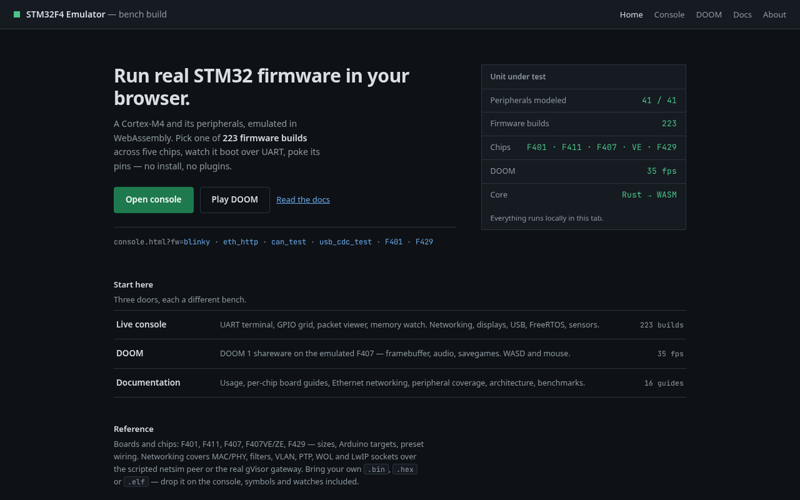

Docs
Sixteen guides, rendered live from the markdown shipped in the repo — what you read here is what is committed.
Start here
The console, directly.
Live console
Run real Cortex-M4 firmware in your browser: pick a preset (blinky, Ethernet/DHCP/TCP/HTTP, USB CDC, CAN, FreeRTOS, DOOM-grade DMA/LTDC…), press Run, watch the terminal, GPIO grid and packet viewer. Load your own .bin / .hex / .elf plus an optional .map for symbol names. Deep links: console.html?fw=blinky, console.html?board=stm32f429.

Reference
Rendered live from the repo sources.
Loading…
Tools
Headless driving.
Command line & gateway
Drive the same emulator headlessly: node cli.mjs … --inst, the Ethernet gateway on :5070, and the WebSocket bridge that streams a Node run into the browser UI.
Full reference
Start from the introduction, usage guide or the source.
